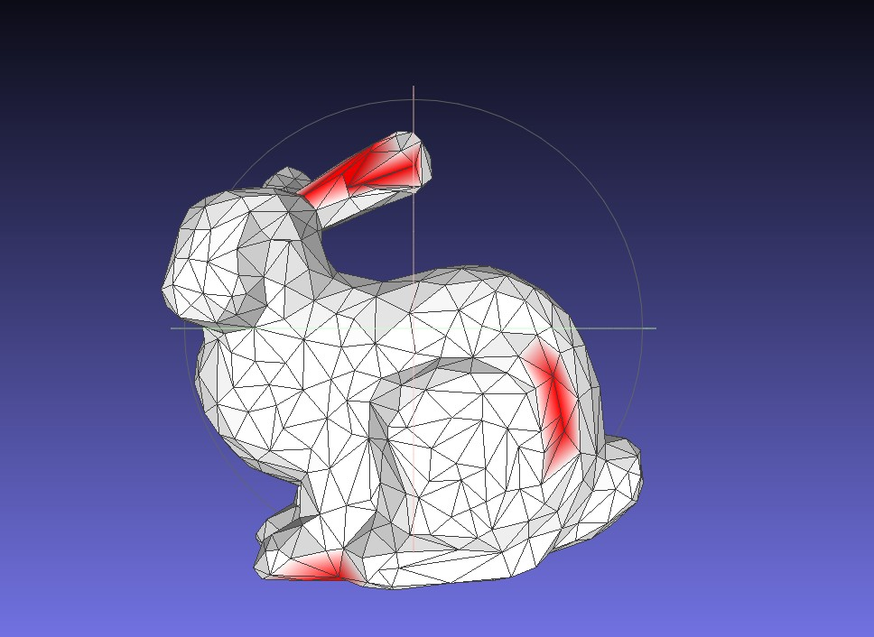
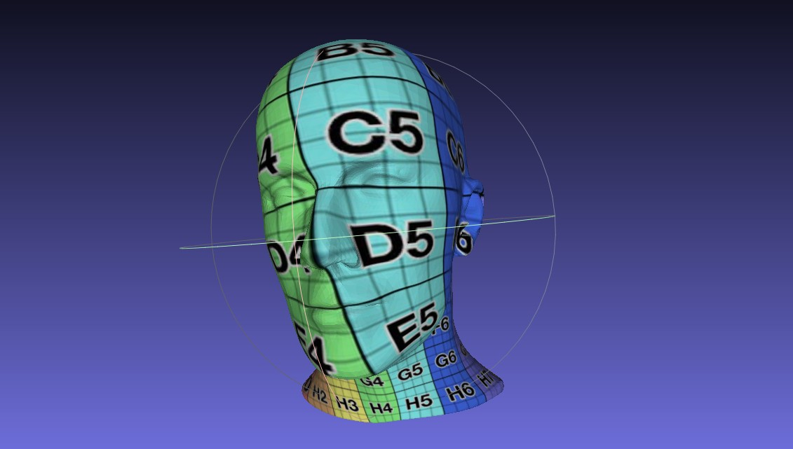
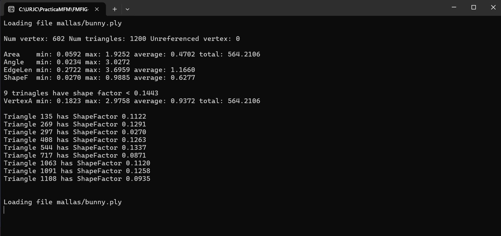
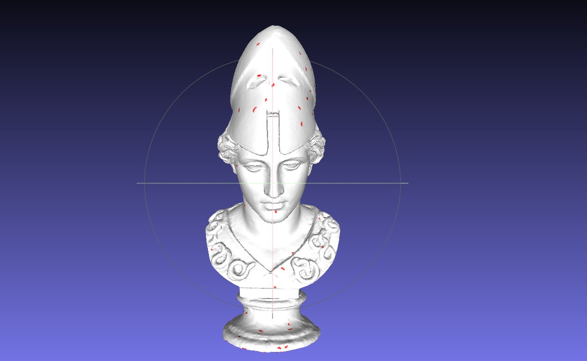
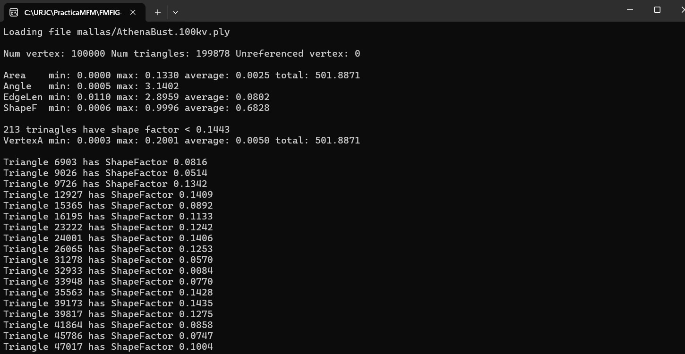
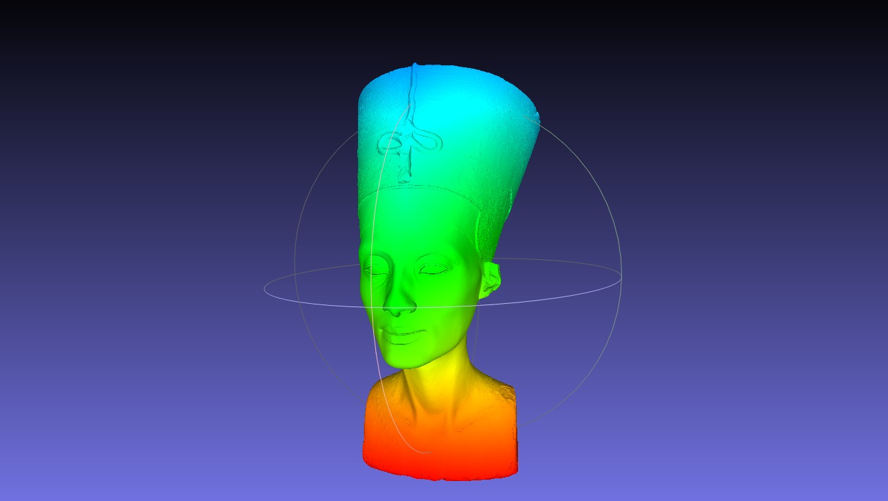
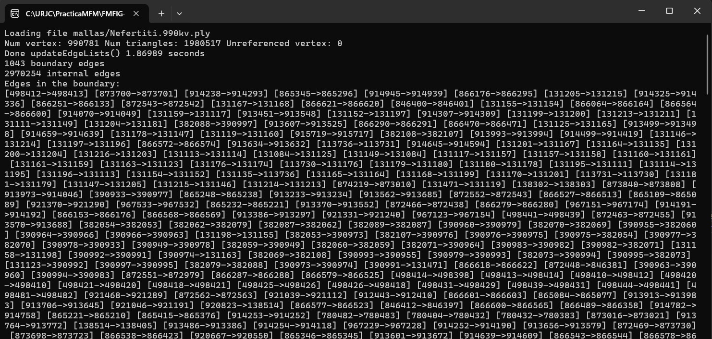
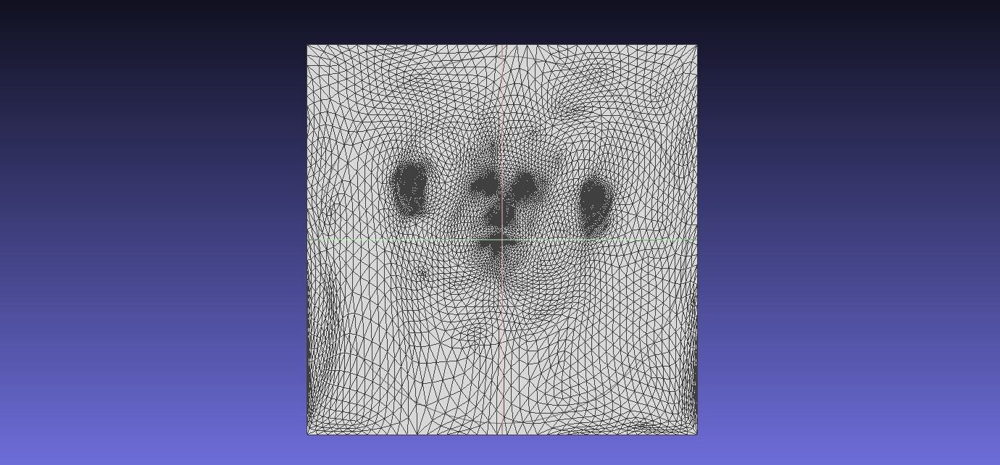
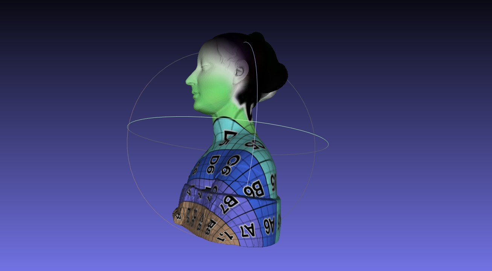
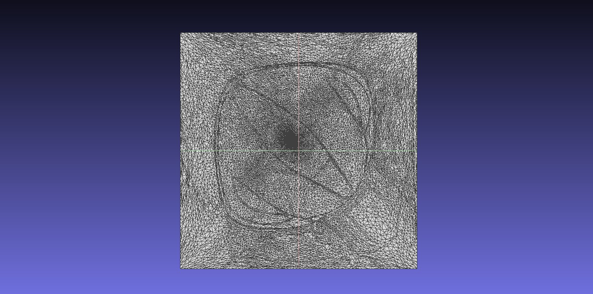

Bunny mesh
Visual inspection of the triangular structure and highlighted low-quality regions.
Computational Geometry · C++ · University Project · 2025
A computational geometry project focused on the analysis, processing and parameterization of triangular meshes using C++, graph algorithms and numerical methods.
This project explores a set of algorithms used to process and analyse triangular meshes. The work includes geometric statistics, boundary detection, geodesic distance computation and texture parameterization.
The algorithms were implemented in C++ and tested on meshes with different levels of complexity, including low-resolution models and larger datasets containing thousands of vertices and triangles.

The first part of the project calculates geometric information such as triangle area, internal angles, edge length and shape quality. Degenerate or low-quality triangles are identified and highlighted to make problematic areas easier to analyse.

Visual inspection of the triangular structure and highlighted low-quality regions.

Numerical output including mesh dimensions, triangle areas, angles, edge lengths and shape factors.

Testing the analysis algorithm on a considerably denser geometric model.

Statistical analysis of a mesh containing a large number of vertices and triangles.
Mesh edges are classified as internal or external in order to identify the boundary. A graph-based shortest-path algorithm is then used to calculate the distance between every vertex and the nearest boundary.
These distances are converted into colour values, creating a visual representation of how far each region is from the external contour.

Colour mapping represents the distance from each vertex to the nearest mesh boundary.

Console output showing boundary edges, mesh information and algorithm execution results.
The final part maps a three-dimensional mesh onto a two-dimensional texture domain. Boundary vertices are assigned fixed UV coordinates, while the positions of internal vertices are obtained by solving a linear system.
Dense and sparse matrix implementations were developed and compared. The sparse approach allows larger meshes to be processed more efficiently.
The checker texture makes UV distortion and orientation visible across the three-dimensional model.

Two-dimensional distribution of the mesh vertices after parameterization.

Application of the parameterization algorithm to a more complex and detailed model.

Flattened representation used to evaluate the distribution and deformation of the texture coordinates.
The source files contain the main implementations developed for mesh statistics, boundary processing and texture parameterization.
Computes geometric measurements and identifies triangles with problematic shape factors.
View codeDetects internal and external edges and computes distances from mesh boundaries.
View codeBuilds and solves the UV parameterization system using dense matrices.
View codeUses sparse matrices and solvers to process larger meshes more efficiently.
View codeThe complete report includes the tests, numerical outputs and visual results produced for each stage of the project.
Open project report